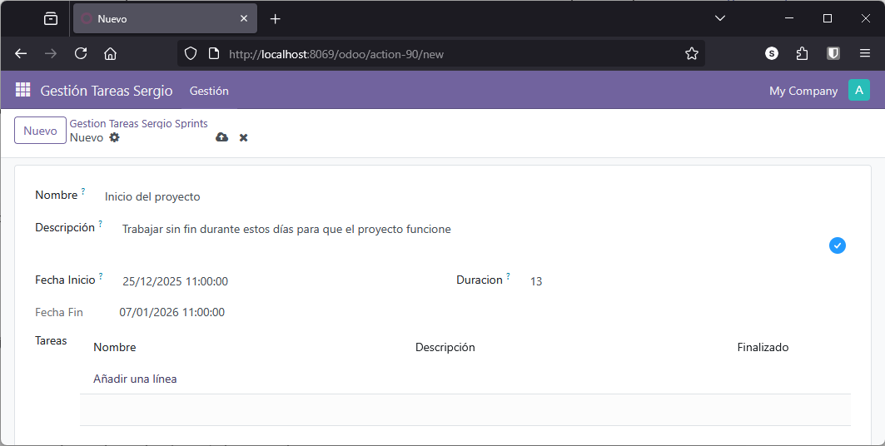

7.3. Campos básicos computados.
En esta sección se abordará la creación de campos computados en Odoo, es decir, aquellos campos cuyo valor no es introducido manualmente por el usuario, sino que se determina automáticamente en función de otros atributos del modelo. Este tipo de campos resulta fundamental para mantener la integridad y coherencia de los datos, así como para automatizar procesos dentro del sistema.
Creación de un campo computado sin almacenamiento en la base de datos
Como primer ejemplo, se procederá a la definición de un campo computado denominado codigo, de tipo char. Por defecto, un campo de este tipo sería editable por el usuario, pero en este caso se configurará para que su valor sea calculado mediante una función específica, por ejemplo, get_codigo.
La función encargada del cálculo debe implementarse dentro del mismo modelo. Por convención, esta función recibe una colección de registros (instancias del modelo), lo que permite operar sobre múltiples elementos de manera eficiente.
A continuación se muestra un ejemplo de implementación:
# nuevo campo con el código de tarea (computado)
codigo = fields.Char(compute="_get_codigo")
# Función del calculo de código de la tarea
def _get_codigo(self):
for tarea in self:
# Si la tarea no tiene un sprint asignado le asignamos como nombre TSK_ mas nombre tarea
if len(tarea.sprint) == 0:
tarea.code = "TSK_"+str(tarea.id)
else:
# si no, le generamos un nombre tarea a partir del nombre del sprint
tarea.code = str(tarea.sprint.name).upper()+"_"+str(tarea.id)
En este fragmento de código, se genera un valor único para el campo codigo utilizando la clave primaria (id) del registro. Si la tarea no tiene un sprint asociado, el código generado será de la forma TSK_<id>. En caso contrario, se utilizará el nombre del sprint en mayúsculas seguido del identificador.
Nota
El campo id es la clave primaria generada automáticamente en todos los modelos de Odoo tal y como se puede ver si revisamos la tablas creadas en PostgreSQL de cada modelo
Este campo computado no se almacena en la base de datos; su valor se recalcula dinámicamente cada vez que se visualiza el registro y para visualizar el campo en el formulario, debe añadirse explícitamente en la vista.
Un buen ejercicio sería revisar la tabla asociada al modelo en la base de datos para comprobar estos datos.
De esta forma, una vez funcione, al crear una nueva tarea sin sprint, el sistema generará automáticamente el código. Si posteriormente se asigna un sprint y se guarda el registro, el código se actualizará en función del nuevo valor.
Campo calculado con almacenamiento y dependencias
En situaciones más complejas, puede ser necesario definir campos computados cuyo valor se almacene en la base de datos y que dependan de otros atributos. Este enfoque es útil cuando el cálculo es costoso o cuando se requiere que el valor esté disponible para búsquedas o filtrados.
Supongamos que en el modelo Sprint lo definimos de forma diferente y que tenemos los campos fecha_ini y duracion pero no el fecha_fin. Podríamos añadir como un campo adicional fecha_fin, de tipo Datetime, cuyo valor se calculará automáticamente en función de la fecha de inicio y la duración del sprint. Además, este valor se almacenará en la base de datos y solo se recalculará cuando cambien los campos de los que depende.
La implementación sería la siguiente:
from datetime import timedelta
class spints_sergio(models.Model):
_name = 'gestion_tareas_sergio.sprints_sergio'
name = fields.Char()
fecha_ini = fields.Datetime()
duracion = fields.Integer(string="Duracion", help="Cantidad de días que tiene asignado el sprint")
fecha_fin = fields.Datetime(compute='_compute_fecha_fin', store=True)
@api.depends('fecha_fin', 'duracion')
def _compute_fecha_fin(self):
for sprint in self:
if sprint.fecha_ini and sprint.duracion > 0:
sprint.fecha_fin = sprint.fecha_ini + timedelta(days=sprint.duracion)
else:
sprint.fecha_fin = sprint.fecha_ini
Aspectos clave de la implementación:
- El decorador
@api.depends('fecha_ini', 'duracion')indica que el campofecha_finse recalculará únicamente cuando se modifiquen los camposfecha_inioduracion. - El parámetro
store=Trueen la definición del campo permite que el valor calculado se almacene en la base de datos, facilitando su uso en búsquedas y vistas. - Si alguno de los campos requeridos no está definido, el campo
fecha_fintomará el valor defecha_inicomo valor por defecto. - En el código anterior se han omitido líneas por simplicidad
- Puesto que se utiliza la funión
timedeltade python se ha importado el módulo que la contiene.
Tras actualizar el módulo y la vista correspondiente, al crear un sprint y asignar una duración y una fecha de inicio, la fecha de fin se calculará automáticamente y quedará almacenada en la base de datos.
Cuidado si se obtienen errores extraños
Hay ocasiones en que los cambios en los modelos afectan a la base de datos y al reiniciar el servicio, el ORM no se refresca bien debido a inconsistencias en la base de datos, por lo que la única solución es eliminar toda la base de datos, con lo que perdemos los datos.
Para eliminar la base de datos, lo hacemos eliminando datos desde docker
{kind=link}

Importante
El uso de campos computados almacenados es recomendable cuando el cálculo es costoso o cuando se requiere que el valor esté disponible para operaciones de filtrado o agrupamiento en las vistas de Odoo.